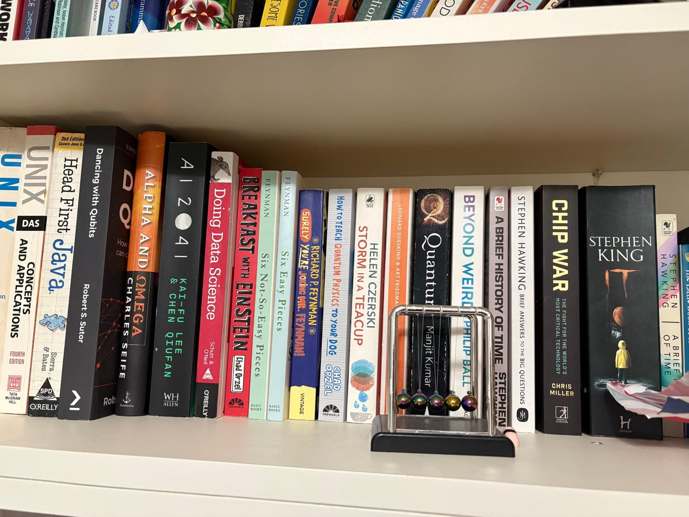
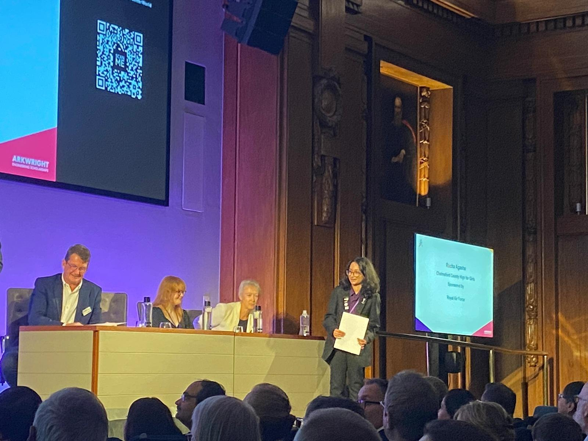
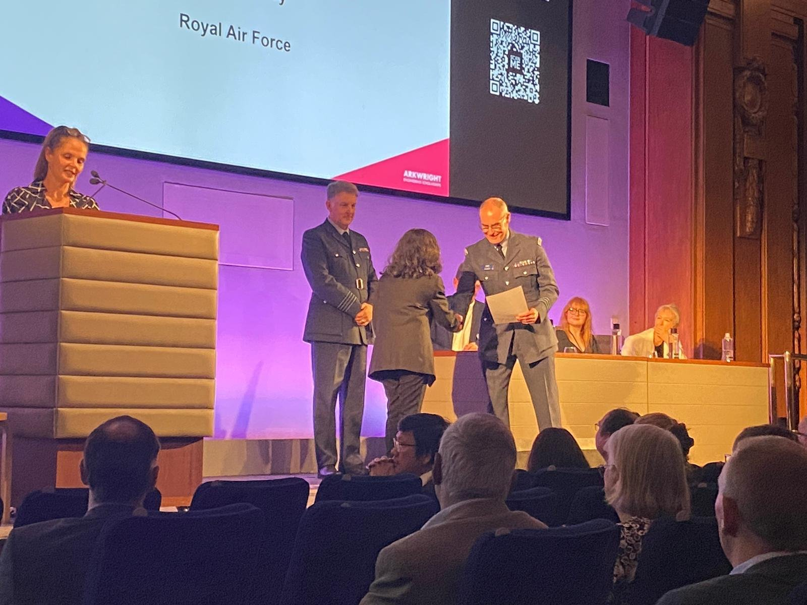
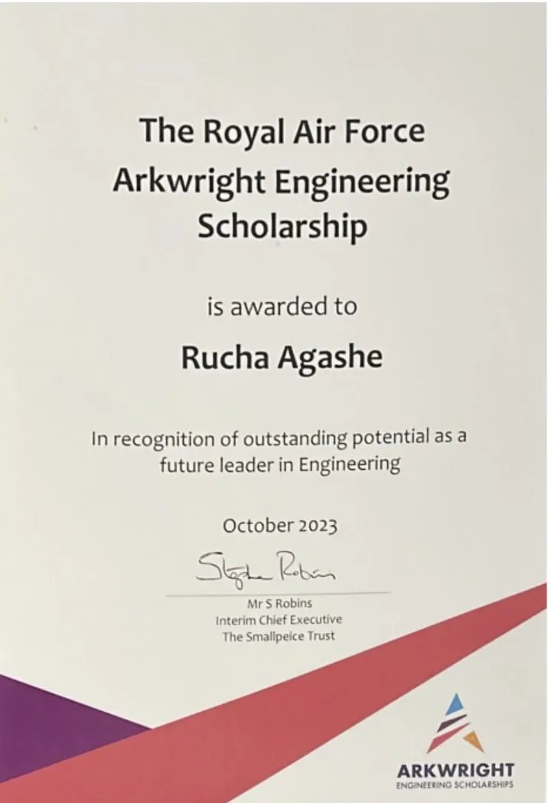
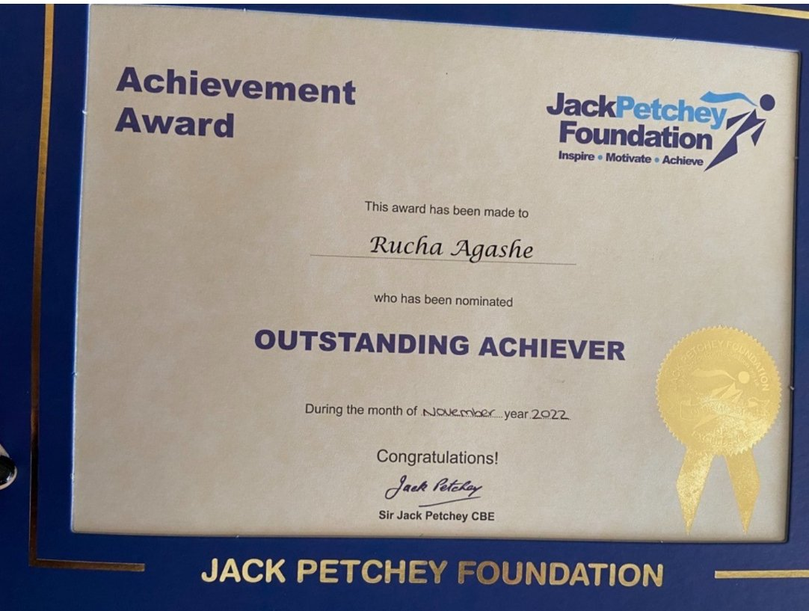
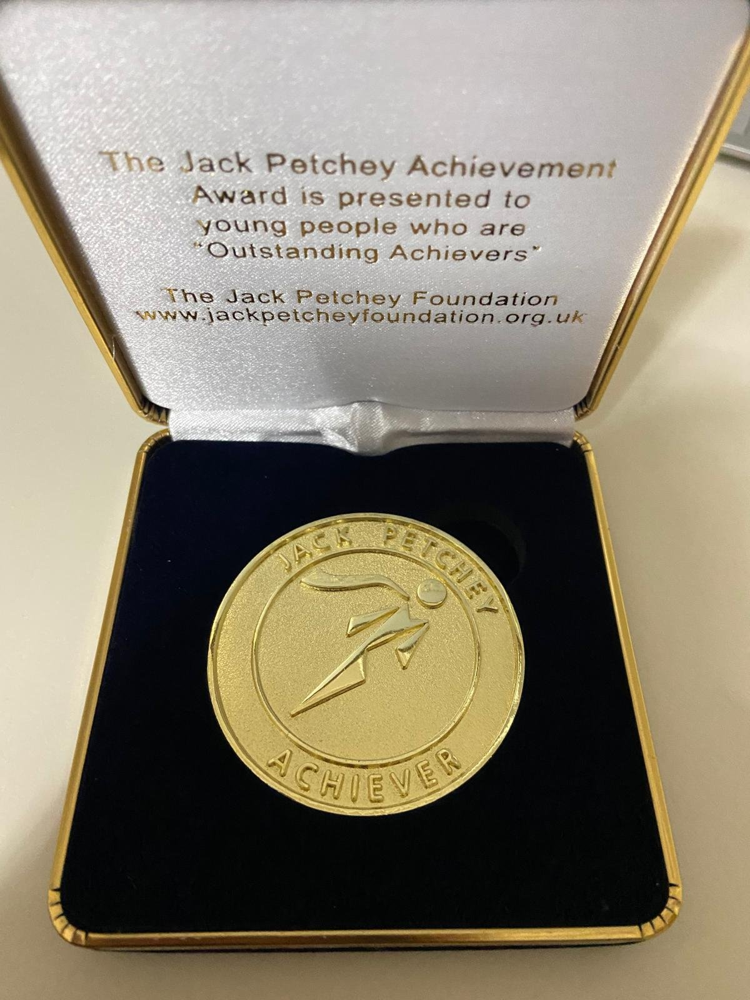
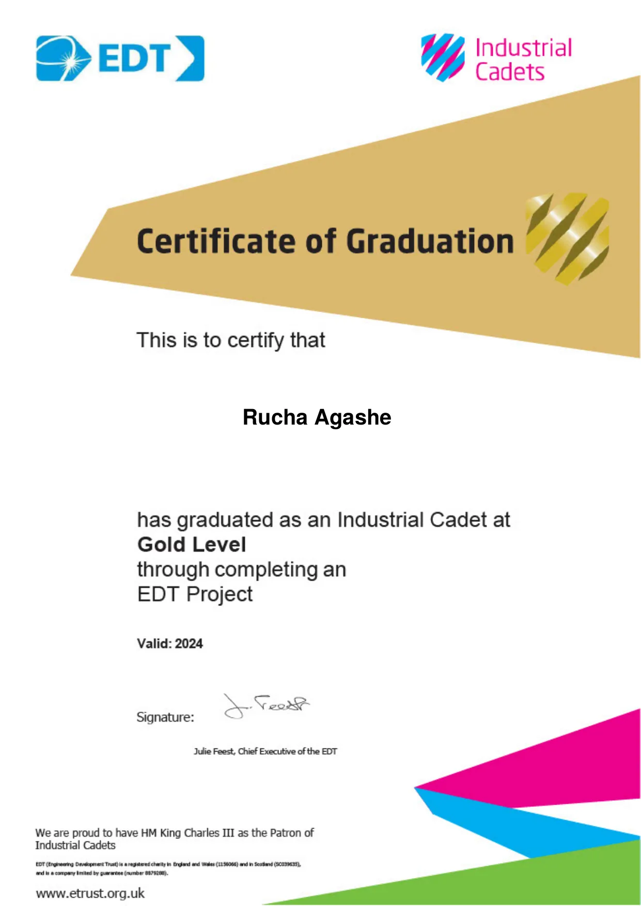
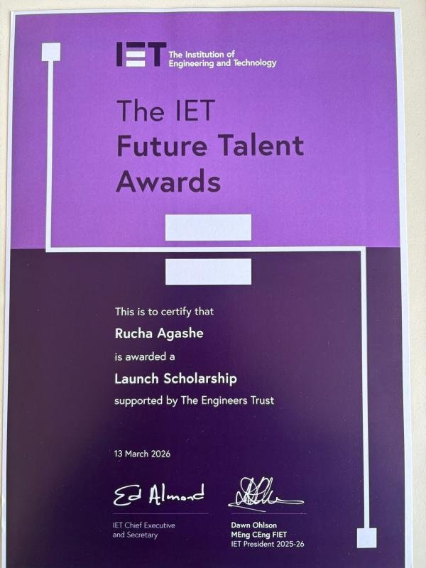
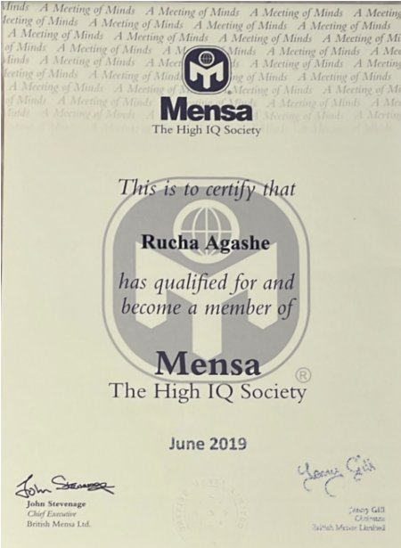

Papers & Books
Research papers and books I have read, am reading, or keep returning to — with my own perspective on each. These range from foundational to recent; the criterion for inclusion is that they changed how I think about something.
A formal academic survey written as part of the WISER + Womanium Quantum Computing Programme — a postgraduate-level programme I attended before starting my undergraduate degree. Covers quantum computing foundations through to algorithms for nonlinear PDEs and differential equations: qubits, quantum gates, phase kickback, QFT, QPE, Grover's algorithm, and quantum linear solvers including HHL, VQLS, functional quantum linear solvers, and Schröddingerisation.
The HHL section gives honest treatment of the exponential speedup's caveats — state preparation cost, readout limitations, condition number dependence — alongside near-term alternatives like VQLS. The goal was to document the full arc from foundations to current research frontiers, written for a reader who wants to understand not just what the algorithms do but where the gaps are.
Submission for the British Physics Olympiad Computational Challenge — awarded Gold and Best in Cohort. The project builds a ray tracer for spherical mirrors from first principles: applying the law of reflection iteratively to simulate image formation, distortion, and multi-bounce behaviour. The writeup covers the physics derivation, implementation decisions, and analysis of where the paraxial approximation breaks down.
The interesting part is the edge cases — what happens near the focal point, where the mirror equations become singular, and how to handle rays that don't converge. The simulation makes these visible in a way that standard optics diagrams don't.
Technical writeup for the chess engine project — covering board representation, move generation, search algorithm design (minimax with alpha-beta pruning), and evaluation function construction. The writeup documents the design choices and the performance trade-offs at each stage: why bitboards over piece lists, how the search tree is pruned, what the evaluation function captures and what it misses.
Chess engines are a good forcing function for understanding search under constraints — the game tree is deep, the branching factor is high, and the gap between a naive implementation and a competitive one is almost entirely about algorithmic efficiency rather than brute force.
A research survey on competitive approaches to the OpenAI Parameter Golf challenge — building the best-performing language model within a 16MB weight budget, evaluated in bits per byte on FineWeb, trained on 8×H100s. The survey covers the competitive landscape: architecture compression techniques, tokenisation strategies, distillation approaches, and the trade-offs between model capacity and training efficiency at extreme scale constraints.
This is an incomplete draft, published here for transparency. The challenge is ongoing and the survey will be updated as the competitive landscape evolves.
The central result — that loss scales as a power law with model size, dataset size, and compute across seven orders of magnitude — is deceptively clean, but the implications are enormous. The insight that changed the field is that larger models are dramatically more sample-efficient: the optimal strategy under a fixed compute budget is to train a very large model on comparatively modest data and stop well before convergence. This is counterintuitive, and the evidence is unambiguous.
What I find worth dwelling on is what this paper says about the nature of the problem. The fact that architectural details like depth and width matter remarkably little within a wide range suggests that something more fundamental is being learned than the architecture would imply. The scaling laws feel less like engineering results and more like physics — as if intelligence itself has a thermodynamics.
Weizenbaum built ELIZA as a demonstration of the superficiality of natural language understanding — and was disturbed when users formed genuine emotional attachments to it anyway. He considered this a damning result. What strikes me now, reading it in 2023 after building my own ELIZA-inspired chatbot, is how little has changed in the fundamental dynamic: the illusion of understanding is sufficient to produce the effect of understanding, at least in interaction.
The paper is also a starting point for a serious question that LLMs make urgent again: is there a meaningful difference between a system that appears to understand and a system that does? Weizenbaum thought yes, clearly. The current evidence is less comfortable.
The paper that every subsequent LLM descends from — GPT, Claude, Gemini, all of it. The core idea (replacing recurrence with self-attention entirely) seems obvious in retrospect, but the combination of multi-head attention, positional encoding, and the encoder-decoder structure was genuinely novel. What the paper doesn't tell you is that the implications would take several years to become apparent, requiring scale results like the Kaplan paper to unlock.
Worth reading alongside the NanoGPT speedrun community's work, which strips the architecture to its minimum and demonstrates that most of the original design choices can be substantially improved.
Read this directly before the ETH Oxford hackathon where we used QAOA for routing optimisation in FZAP. The algorithm's elegance is in how it maps a combinatorial optimisation problem onto a parameterised quantum circuit — alternating cost and mixing unitaries — then optimises the parameters classically. It's a hybrid approach, which makes it practical on NISQ hardware where circuit depth is severely limited.
The honest assessment is that QAOA's quantum advantage over classical methods hasn't been demonstrated at the scales that matter yet. But it's the most tractable near-term algorithm for problems with combinatorial structure, and the Max-Cut mapping we used in FZAP worked cleanly.
HHL claims exponential speedup for solving linear systems Ax=b over classical methods — but the caveats are what make it interesting. The speedup is real only when the matrix A is sparse and well-conditioned, when state preparation is efficient, and when you only need to read off certain properties of the solution rather than the full solution vector. Each of these qualifications is significant, and together they considerably narrow the set of problems where the speedup materialises.
I spent considerable time on this for my quantum survey paper. The honest treatment matters: the algorithm is a landmark result in quantum complexity theory, but the path from HHL to practical quantum advantage in linear algebra is longer than many popular accounts suggest.
EgoScale is interesting because it makes a scaling-law claim in a part of robotics that has usually felt stubbornly artisanal. The paper trains a vision-language-action policy on 20,854 hours of egocentric human video, retargets wrist and hand actions, and shows that validation loss tracks downstream real-robot performance. That last point matters: it turns human video from "maybe useful pretraining" into a measurable supervision source.
The best idea in the paper is the mid-training bridge. Pure human video is not enough, because a robot hand does not share human proprioception, sensing, or actuation. Pure robot data is too expensive. EgoScale's answer is to pretrain at human scale, then use a smaller aligned human-robot play dataset to translate the representation. That is the pattern I would take into my own robotics work: do not try to collect the whole world in robot form; learn the motor prior from humans and spend expensive robot data on alignment.
GR00T N1 is NVIDIA's attempt to make humanoid robotics feel like the early foundation-model moment in language: a single open model, trained across real robot trajectories, human videos, and synthetic data, that can be adapted across embodiments. The architecture is a useful mental model. System 2 is the vision-language layer that understands the scene and instruction; System 1 is the diffusion transformer that turns that understanding into continuous motor action.
The review is cautiously positive. The paper is not evidence that general-purpose humanoids are solved; language following, out-of-distribution generalization, and real-world safety remain extremely hard. But it is evidence that the field is converging on the right abstraction: policies that ingest language, vision, proprioception, and embodiment-specific state, then output action directly. For me the takeaway is to study the data mixture and deployment workflow, not just the network diagram. In robotics, the model is only as good as the data flywheel around it.
This is the 1946 Erdős planar unit distance problem: for n points in the plane, how many pairs can be exactly one unit apart? The longstanding belief was that square-grid constructions were essentially optimal, giving only slightly superlinear growth. OpenAI's internal model produced a counterexample family with at least n1+δ unit-distance pairs for some fixed δ > 0, and external mathematicians checked and simplified the proof.
The part I find most important is the route the proof takes. It does not brute-force point configurations. It replaces the familiar Gaussian-integer construction with deeper algebraic-number-theoretic machinery: number fields, symmetries, class field towers, Golod-Shafarevich-style existence arguments. That is what makes the result feel like research rather than search. The model found a bridge between discrete geometry and number theory that humans had not prioritized.
My takeaway is also a caution. The human companion paper is not decorative; it is where the proof becomes digestible, contextual, and mathematically useful. This is probably the near-term shape of AI mathematics: models generating strange, high-value constructions, and human experts deciding whether they are true, meaningful, and worth building on.

How to Think Like a Mathematician · ESL (Hastie, Tibshirani, Friedman) · Book of Integrals · A Mathematician's Apology (Hardy) · The Man Who Loved Only Numbers (Hoffman)
Talks & Events
Talks, conferences, and events that were worth attending — and worth writing about. Not a list of appearances, but an account of what actually landed.
Peter Steinberger — founder of OpenClaw, the open-source agentic coding framework — gave the headline keynote at the UK AI Agent Hackathon at Imperial. The slides were sparse. He spoke without the particular brand of performed confidence that keynotes at technology events tend to produce, which was, I think, the point.
The substance of what he said was not complicated, though the implications of it are. He built things in a way that most people in his position did not — slowly, carefully, according to his own technical instincts rather than the consensus of the industry around him — and he continued building that way for long enough that the work accumulated into something of genuine quality and genuine originality. He did not optimise for what was fashionable or fundable or externally impressive. The results, he said, followed from the work itself, not the other way around. "Don't just read about stuff. Play with it and actually go and build things. It doesn't even matter if you end up using it or not. It's really more like the road that's important."
What made the talk land was not the content in isolation — which is, in the abstract, advice that most people have heard in some form — but the texture of the specificity with which he described it. He was not reciting a framework. He was describing, in the particular detail that only lived experience produces, a way of working that he had actually inhabited for years. The distinction matters. There is a large difference between someone who believes that intrinsic motivation produces better work and someone who has organised their professional life around that belief and can tell you exactly what it costs and what it returns.
We placed fourth internationally at this hackathon — the only team of first-years in the competition. But the talk was the thing I kept returning to on the train home.
Three screens, a cracked monitor, a Raspberry Pi in the foreground that I did not bother to move. The countdown read T-00:00:02 when this photograph was taken. I had arranged multiple live feeds — NASASpaceflight's external coverage, NASA's own official stream, and a third tracking ground operations — because I wanted more than one camera angle, and I was not willing to miss the ignition sequence from any of them.
I find human spaceflight genuinely moving in a way that is somewhat difficult to articulate without crossing into the territory of the mawkish, which I would prefer to avoid. But there is something about the specific nature of the engineering problem involved — the extraordinary and unforgiving precision required to sustain human life in an environment that is, in every physical sense, hostile to it — that I find clarifying in a way that very few things are. It is one of the few domains in which the phrase "good enough" is not a category that can meaningfully exist; where the acceptable margin of error is not a business decision but a physical constant.
The thought I kept returning to, watching the SLS clear the launch tower: the systems that matter most are the ones in which failure is not a recoverable state. Most of what I build carries the quiet luxury of iteration — deploy, observe, correct, repeat. Artemis carries no such luxury. That asymmetry in consequence produces a different quality of rigour, and I think it is worth deliberately importing that quality into work that operates under lower stakes, precisely because the lower stakes make it easier to become careless.


The Arkwright Engineering Scholarship ceremony takes place in a formal hall of the kind that produces, without any explicit instruction, the instinct to stand slightly straighter. Approximately two hundred scholars are selected nationally each year — from a considerably larger pool — and the awards are presented on stage by representatives of the sponsoring organisations, in the presence of the other scholars, their teachers, and whichever family members have made the journey. Mine was sponsored by the Royal Air Force. The award was handed over by a former RAF Commander-in-Chief.
The certificate reads, in the precise and old-fashioned language that formal awards tend to use: in recognition of outstanding potential as a future leader in Engineering. There is something about receiving that form of words from someone who has spent a career at the operational frontier of British engineering — where the tolerances are measured in millimetres and the consequences of exceeding them are measured in lives — that carries a different weight than a certificate that arrives in the post. I don't think that weight is entirely ceremonial.
The scholarship brought mentorship, industry visits, and a sustained relationship with engineers working at the edge of aerospace and defence technology — all of which mattered. But more practically than any of those: it was the first time an institution I genuinely respected told me, without qualification, that the trajectory I was on was a considered and worthwhile one. External validation is not, in itself, the point of anything. But there are moments when it is useful to have confirmed that you have not been completely misreading the map.
Academics
Imperial College London. Academic record from school — the formal substrate beneath everything else on this site.
| Subject | Grade | Notes |
|---|---|---|
| Mathematics | A* | — |
| Further Mathematics | A* | — |
| Physics | A* | — |
| Computer Science | A* | — |
| German | A* | — |
Five A-levels — the vast majority of students take three. All five at A*.
Awards & Certificates
A record of recognitions received across engineering, mathematics, physics, and computing. Some you frame. Some you earn in rooms where you can barely breathe.







Contact
interesting problems.
I'm looking for research collaborations, spring weeks, internships, and conversations about quantum computing, ML systems, or anything at the intersection of mathematics and computer science.
I strive to inspire and be inspired — so if you're working on something genuinely hard, I'd like to hear about it.
Currently based in London · Imperial College London
Notes
Things I've been watching, reading, and thinking about — written up while still fresh. Sources linked throughout. These are notes in the genuine sense: not essays, just thinking out loud.